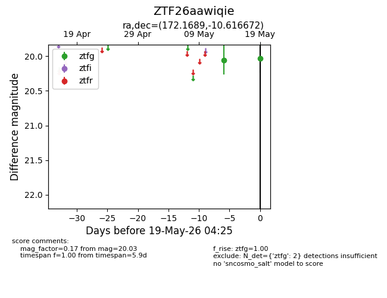
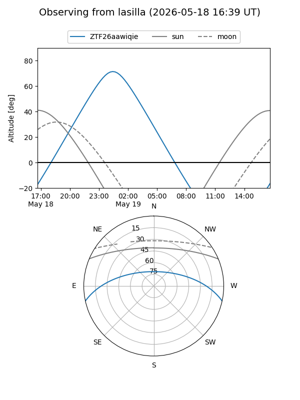
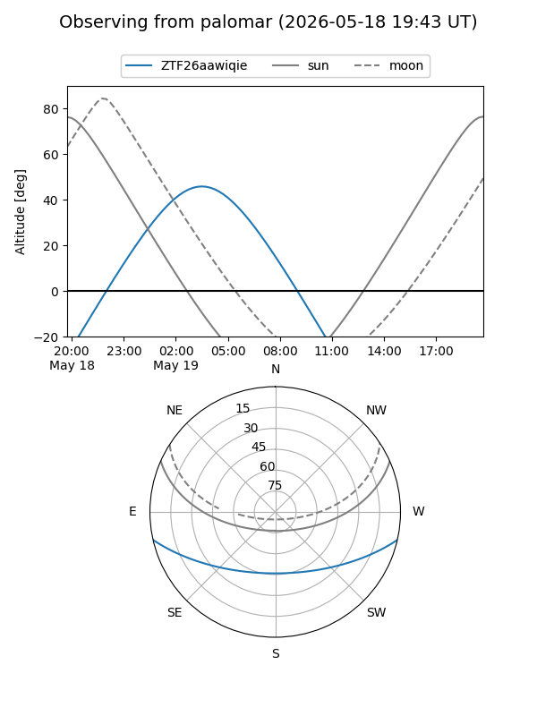

ZTF26aawiqie
Target ZTF26aawiqie at 2026-05-19 04:26
Aliases and brokers:
FINK: link
Lasair: link
ALeRCE: link
alt names
ZTF26aawiqie (ztf,fink_ztf)
Coordinates:
equatorial (ra, dec) = 172.1689,-10.61667
equatorial (HMS+DMS) = 11:28:40.55,-10:37:00.02
galactic (l, b) = (272.1616,+47.25015)
Flags:
Photometry:
last ztfg=20.03
2 ztfg detections
Lightcurve

Visibility


Additional plots